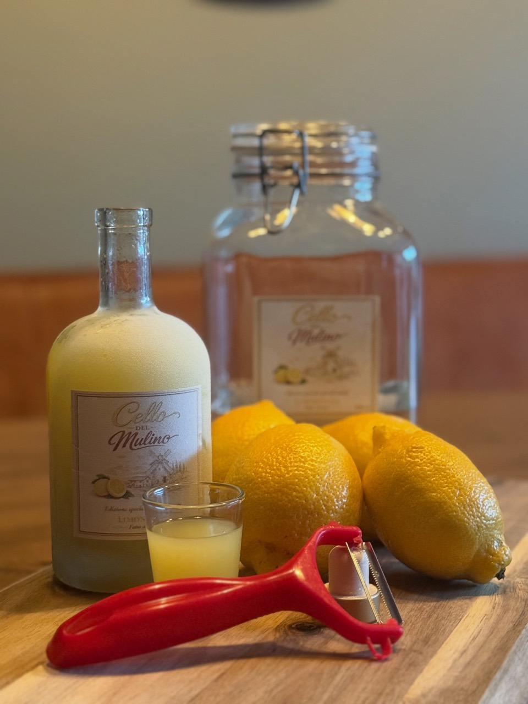
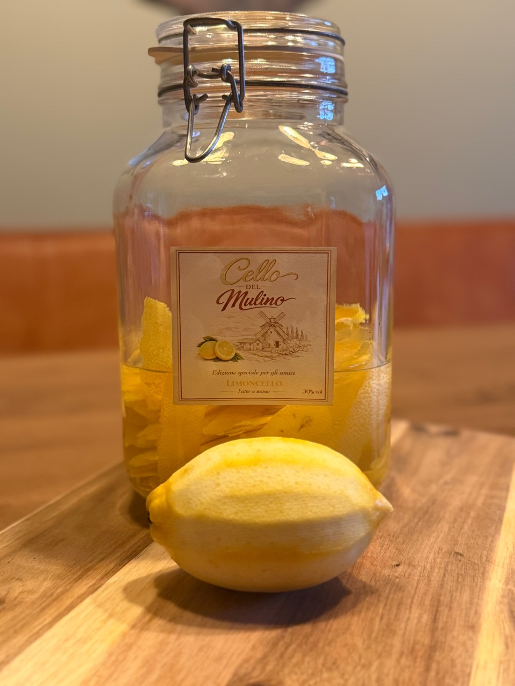
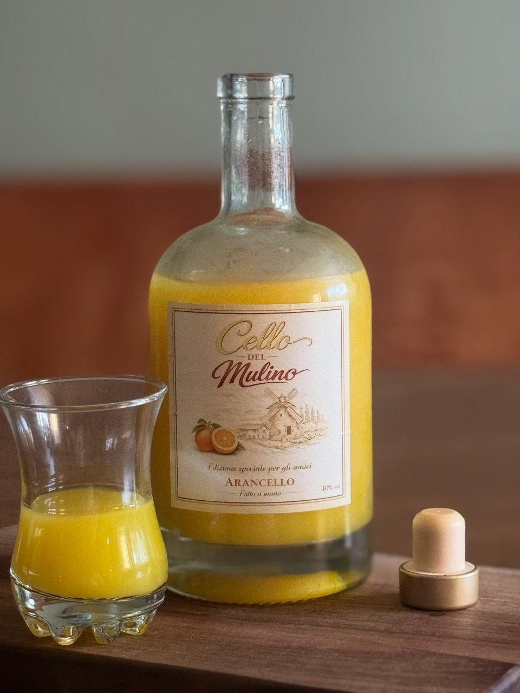
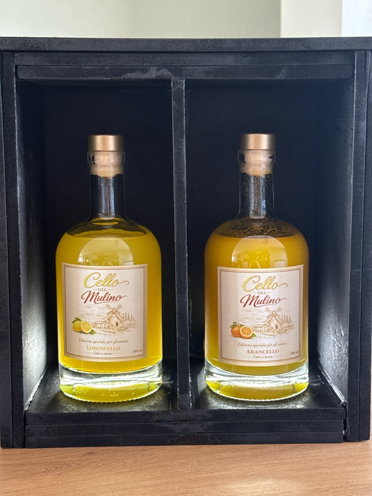

01
Casa del Mulino Limoncello
Fris, zonnig en intens citroenachtig. De klassieker van het huis.
Bekijk details
Piccola casa di liquori
Fatto a Mano
Gemaakt in Nederland
Italiaanse traditie x Nederlands vakmanschap. Een fles voor lange tafels, kleine glazen en warme avonden.
Merkverhaal
Het huis van de molen
Casa del Mulino begint bij een naam. Mulder werd Mulino: molen in het Italiaans. Nederland gaf het vakmanschap, Italië gaf de inspiratie, en samen werden ze een klein likeurhuis waar iedere fles rust, aandacht en karakter krijgt.
De schillen trekken langzaam. De likeur wordt met de hand gefilterd, gemengd, gebotteld en geëtiketteerd. Geen haast. Geen massa. Alleen aandacht.
Fatto a Mano
Gemaakt in Nederland



"Alsof de fles uit een klein Italiaans dorp komt, maar gemaakt met Nederlandse precisie."
Huidige collectie
Alleen Limoncello, Arancello en Meloncello zijn op dit moment verkrijgbaar. Elk met een eigen kleur, eigen karakter en dezelfde handgemaakte signatuur.
Fris, zonnig en intens citroenachtig. De klassieker van het huis.
Bekijk details
Warme sinaasappeltonen met een zachte bitterzoete finale.
Bekijk details
Licht, rond en fruitig met zachte meloen en een verfijnde afdronk.
Bekijk detailsExclusieve Collecties
Zorgvuldig gekozen combinaties voor een lange tafel, een bijzonder cadeau of een eerste kennismaking met Casa del Mulino.

Exclusieve Collectie
De perfecte combinatie om twee smaken van Casa del Mulino te ontdekken.
Bekijk collectie
Signature Collection
Drie unieke smaken, samengebracht in één exclusieve selectie.
Ontdek alle smakenHet ambacht

Bewaaradvies
Bij voorkeur in de vriezer, zodat de likeur zijn zachte structuur behoudt.
IJskoud in een klein glas, rustig geschonken na het eten of aan het begin van een avond.
Minimaal een jaar wanneer de fles goed gesloten en koel bewaard wordt.
Licht schudden voor gebruik wanneer natuurlijke oliën zich hebben gescheiden.
Veelgestelde vragen
Door de natuurlijke oliën uit de citroenschil. Juist die oliën geven geur, mondgevoel en karakter.
Casa del Mulino wordt in kleine batches gemaakt. Natuurlijke bestanddelen kunnen zich na verloop van tijd licht verzamelen.
IJskoud komt de frisheid mooier naar voren en krijgt de likeur een zachte, bijna fluwelen structuur.
Minimaal een jaar wanneer de fles goed gesloten en koel bewaard wordt.
Dat percentage geeft balans: genoeg kracht om aroma te dragen, maar zacht genoeg om elegant te blijven.
Ja. Schillen, filteren, mengen, bottelen en etiketteren gebeuren handmatig en in kleine hoeveelheden.
Fruit is levend materiaal. Iedere oogst heeft subtiele verschillen in geur, olie en intensiteit.
Galerij
Reviews
"Een fles die direct voelt alsof hij uit Italie komt. Zacht, fris en heel zorgvuldig gemaakt."
Particuliere proeverij"De Limoncello heeft precies die balans tussen kracht en elegantie. Niet te zoet, wel rond."
Restauranttafel"Je merkt dat dit geen massaproduct is. Iedere fles voelt persoonlijk."
Cadeau-ontvangerHandgemaakt
Casa del Mulino
Fatto a Mano
Gemaakt in Nederland
Proeverijen
Ontdek de drie smaken tijdens een kleinschalige masterclass: ruiken, proeven, zelf schillen en begrijpen waarom tijd het belangrijkste ingredient is.
Bekijk proeverijenContact